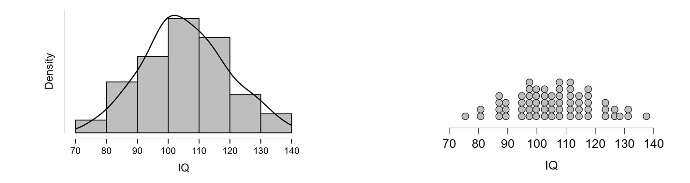
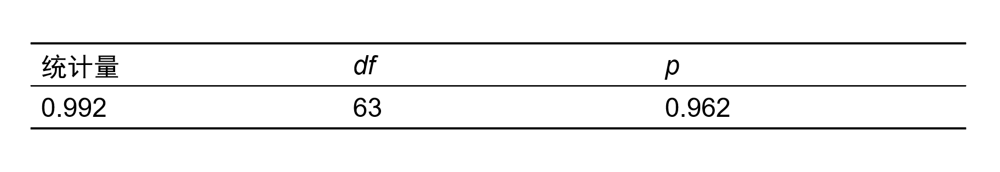
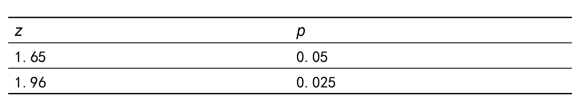
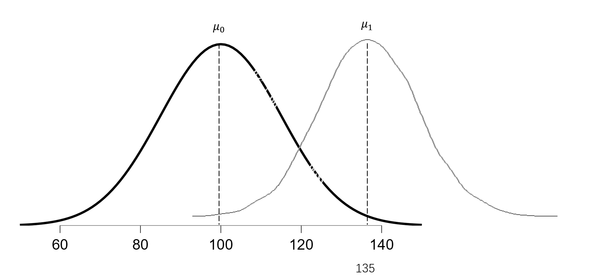
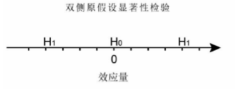
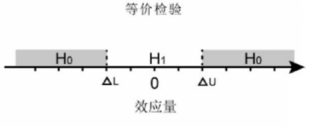
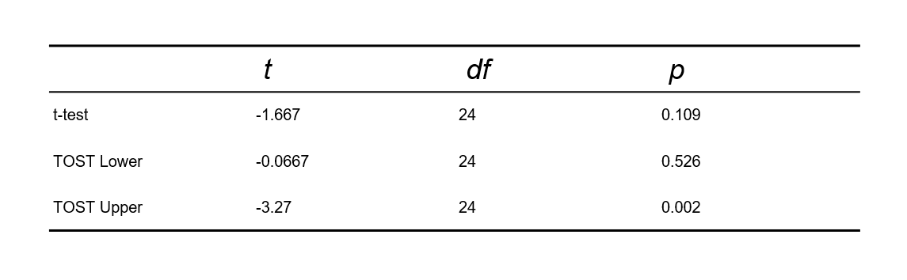
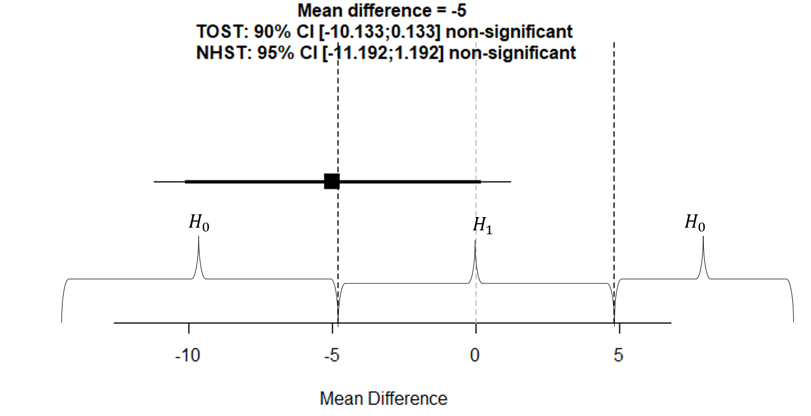
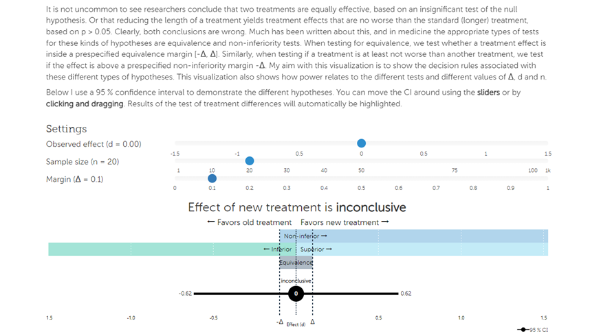

14 - t检验
(t-test)
Hu Chuan-Peng
2023-05-31
Review
相关分析
相关的定义
相关系数
常见的相关系数
皮尔逊积差相关
斯皮尔曼等级相关
肯德尔和谐系数
相关分析的应用
单样本假设检验(Single sample hypothesis testing)
假设检验步骤


z检验
某心理学家从受过专门训练的儿童中随机抽取64 名儿童进行韦克斯勒儿童智力测验(常模：\(\mu_0= 100\),\(\sigma_0 =15\)。结果发现，这64名儿童的平均智商为105。问：能否认为这些接受了该项训练的儿童的智力高于其所在年龄组儿童的一般水平？
问题1：接受训练的儿童的智商和正常儿童的智商是否存在差异？
问题2：接受训练的儿童的智商相比正常儿童的智商差多少？
问题1：接受训练的儿童的智商和正常儿童的智商是否存在差异？ （假设检验）
问题2：接受训练的儿童的智商相比正常儿童的智商差多少？ （参数估计）
在\(H_0\)成立的前提下，如何计算受训儿童的智力或者更极端智力水平出现的概率\(p\)？
根据我们获得的数据，决定使用合适的统计模型
每种模型都存在一定的预设，数据需要符合统计模型的预设
z检验的预设(assumptions)
总体为正态分布
样本量大于30
样本平均数的抽样分布为正态分布
t 检验的预设为：
总体为正态分布
样本平均数的抽样分布为t分布
某心理学家从受过专门训练的儿童中随机抽取64名儿童进行韦克斯勒儿童智力测验(\(mu_0\) = 100， \(\sigma_0\) = 15)。结果发现，这64名儿童的平均智商为105。 问：能否认为这些接受了该项训练的儿童的智力高于其所在年龄组儿童的一般水平？
基本步骤
- 提出假设
接受训练的儿童智力是否高于常模的平均水平 \(\to\)
\(H_0: \mu = \mu_1\)
\(H_1: \mu_1 > \mu_0\)
- 提出假设
假定存在两个总体
一个总体是正常孩子，
另一个总体是超过正常智力水平的孩子
- 根据虚无假设\(H_0\)，选择相应的统计模型。
我们假定样本量为64的正常”儿童群体的平均智力”呈现正态分布，可使用z检验;
在使用z检验之前，需要检查数据是否满足z检验的预设。
- 根据虚无假设\(H_0\)，选择相应的统计模型。
z检验的预设为：
总体为正态分布;
样本量大于30;
样本平均数的抽样分布为正态分布
如何检验正态分布
目视
S-W检验
Q-Q 图

3.确定显著性水平\(\alpha\),\(\alpha\)确定后，否定域也随之被确定了。
指定\(\alpha=0.05\)(拒绝零假设犯错的可能性)；
单侧检验的临界点\(Z_{0.05}=1.645\)
注意：显著性水平意味着犯错误的可能性
4.基于\(H_0\)所设定的统计模型，计算检验统计量的值。
\(\sigma_{\bar{X}} = \frac{\sigma_0}{\sqrt{n}}=\frac{15}{\sqrt{64}}=1.875,Z=\frac{\bar{X}-\mu_0}{\sigma_{\bar{X}}}=\frac{105-100}{1.875}=2.67\)
若总体方差未知，可使用样本方差进行计算\(Z = \frac{\bar{X}-\mu_0}{\frac{S_{n-1}}{\sqrt{n}}}\)
5.做出决策
单侧检验的临界点\(Z_{0.05}=1.645\) ;
\(Z = 2.67 > Z_{0.05}\)
在\(\alpha=0.05\)显著性水平上拒绝虚无假设，即\(\mu_{\bar{X}}>\mu_0\)
假设检验的结果解读：
- 受训的学生为平均智商为105，我们可认为该培训对提高儿童在韦氏智力量表得分上有效，达到了统计上的显著性水平
- 受训的学生为平均智商为105，我们可认为该培训对提高儿童在韦氏智力量表得分上有效，达到了统计上的显著性水平
参数估计的结果解读：
- 受训的儿童与正常孩子的差异并非特别大。
单尾vs双尾
我们在上述问题中假设接受培训的孩子平均智商一定会高于正常孩子，存在一种可能该培训会使孩子的智商降低？如果存在的话，我们该如何考虑这个问题呢？
结果呈现
接受培训的儿童与正常儿童相比较差异有统计学意义\((z = 2.67, p = 0.004, Cohen’s d = 0.33 , 95% CI : [0.08 , 0.59] )\), 可以认为该培训对儿童智力有影响，接受培训的儿童智力较正常儿童的智力更高。
练习
心理学家对某大学少年班的36名学生进行了韦克斯勒智力测验(\(\mu\) = 100， \(\sigma\) = 15),结果这些少年班大学生的平均智商为132，标准差为9。那么是否可以认为这些少年班大学生的值上高于一般人的平均水平。
作答内容
明确并凝练问题（如：问题1：该样本飞行员的视 力和普通飞行员是否存在差异？）
撰写假设检验5步骤
进行规范化的结果表达
思考
对于该问题，除了假设检验还有其他解答方法吗？
对于肉眼可见的差异，我们不需要使用假设检验进行验证。
在假设检验普及之前，研究者们并不依赖于假设检验来推断结果间的差异。
单样本t检验
一般来说，人的视觉反应时符合正态分布,且某心理学家研究发现，普通飞行员的平均视觉反应时为170ms，某人随机抽取25名飞行员进行测定，结果发现其平均视觉反应时为175ms，标准差\(S_{n-1}\) 为15。问：能否根据测试结果而否定该心理学家的结论？
问题1：该样本飞行员的视力和普通飞行员是否存在差异？
问题2：该样本飞行员的视力相比普通飞行员的视力差多少？
问题1：该样本飞行员的视力和普通飞行员是否存在差异？（假设检验）
问题2：该样本飞行员的视力相比普通飞行员的视力差多少？（参数估计）
我们该怎么计算\(𝐻_0\)成立下，该样本飞行员的视力超过正常总体均值的概率\(p\)
t 检验的预设为
总体为正态分布
样本平均数的抽样分布为t 分布
基本步骤
1.提出假设
该样本飞行员的视力和普通飞行员是否存在差异，提出相应的虚无假设\(𝐻_0\)和研究假设\(𝐻_1\)，选择使用单侧检验。
\(𝐻_0\)：该样本飞行员的视力和普通飞行员没有差异， $_0 = _1 $
\(𝐻_1\)：该样本飞行员的视力优于普通飞行员， $_0 < _1 $
假定存在两个总体
一个总体是普通飞行员
另一个总体是样本飞行员
- 根据虚无假设𝐻_0，选择相应的统计模型。
我们假定样本量为25的样本飞行员”的视觉反应时”呈现正态分布，可使用t检验。
在使用t 检验之前，需要检查数据是否满足t检验的预设。
- 根据虚无假设𝐻_0，选择相应的统计模型。
- 确定显著性水平\(\alpha\)，\(\alpha\)确定后，否定域也随之被确定了。
指定\(\alpha\) = 0.05（拒绝零假设犯错的可能性）。
单侧检验的临界点 \(df\) = 24, \(t_{0.05}=1.711\)
- 确定显著性水平\(\alpha\)，\(\alpha\)确定后，否定域也随之被确定了。
4.基于\(H_0\)所设定的统计模型，计算检验统计量的值。
\(S_{\bar{X}} = \frac{S_0}{\sqrt{n}}=\frac{15}{\sqrt{25}}=3,t=\frac{\bar{X}-\mu_0}{\frac{S_{n-1}}{\sqrt{n}}}=1.67\)
5.做出决策
单侧检验的临界点\(t_{0.05}=1.711\);
\(t = 1.67 < t_{0.05}\)
效应量\(d = \frac{\bar{X}-\mu_0}{S_{n-1}}=\frac{175-170}{15}=0.3\)
在\(\alpha=0.05\)显著性水平上不能拒绝虚无假设，即\(\mu_{\bar{X}}<\mu_0\)
样本飞行员的平均视觉反应时为175ms ，普通飞行员的平均视觉反应时为170ms，我们可以认为两者的差异没有达到统计上的显著水平。
抽取的飞行员的平均视觉反应时与普通飞行员的平均视觉反应时相 比较差异没有统计学意义\((t (24) = 1.67, p > 0.05, Cohen’s d = 0.3, 95% CI : [-0.07 , 0.74])\), 可以认为抽取的飞行员与普通飞行员来自同一总体。
练习
在某空军招飞测试中，考官对报名者25人进行了光刺激下的简单反应时的测试，反应时平均值为175ms，标准差为15. 那么是否可以认为这些报名者总体上讲比普通飞行员（170ms）更慢一些?
作答内容
明确并凝练问题
- （如：问题1：该样本飞行员的视力和普通飞行员是否存在差异？）
- （如：问题1：该样本飞行员的视力和普通飞行员是否存在差异？）
撰写假设检验5步骤
进行规范化的结果表达
零效应检验
我们能接受虚无假设(该样本飞行员的视力和普通飞行员没有差异)吗？
在假设检验的框架下，p值表示在假定虚无假设为真的条件下出现当前数据的概率，p值并不能提供证据来接受虚无假设。
若该心理学家想证明这些飞行员之间视力不存在差异，他该怎么办？(通过什么方法可以接受虚无假设)
在假设检验的框架下，假设表述如下：
\(𝐻_0\)：该样本飞行员的视力和普通飞行员没有差异， \(d = 0\)。
\(𝐻_1\)：该样本飞行员的视力和普通飞行员存在差异， \(d ≠ 0\)。
实际上，研究者关心的效应量是否非常小，以至可以忽略。因此，可将虚无假设的效应量拓展为一个区间, 这种方法叫做最小效应量检验：
\(𝐻_0\)：该样本飞行员的视力和普通飞行员没有差异， \(d = [-0.32, 0.32]\)。
\(𝐻_1\)：该样本飞行员的视力和普通飞行员存在差异， \(d > 0.32 或 d < -0.32\)。

我们可以设定一个足够小的，几乎可以认为效应为零的区间，用于评估零效应。
这一区间即为”最小感兴趣的效应量区间”，简称为” 最小感兴趣区”（Smallest effect size of interest，SESOI）。
目标效应量在SESOI内时，研究者可以认为效应量几乎为零，可以忽略不计。
等价检验则正好将最小效应量检验的\(𝐻_0\) 与\(𝐻_1\)所对应的效应区间对调， \(𝐻_1\)在区间之内，而\(𝐻_0\)在区间之外。
在等价检验的框架下，虚无假设表述如下：
\(𝐻_0\)：该样本飞行员的视力和普通飞行员存在差异， \(d > 0.32 或 d < -0.32\)。
\(𝐻_1\)：该样本飞行员的视力和普通飞行员没有差异， \(d = [-0.32, 0.32]\)。
等价检验也可以通过基于参数估计的方法实现。频率统计框架 下，我们可以估计效应的值及其置信区间，然后根据效应量置信区间与 SESOI重合的比例进行推断。
对上述数据分别进行单样本t检验和等价检验，结果如下：
对上述结果在原始分数上进行可视化：
因此，没有证据能够支持样本飞行员与普通飞行员的视力没有差异。
在频率主义下，等价检验的最小感兴趣区间是根据情境来变化的，没有固定的规则。
他的结果往往不一定是接受零效应，可能会出现既不能证明某个效应存在也不能证明某个效应不存在，是一个实验设计或者样本量存在问题。
